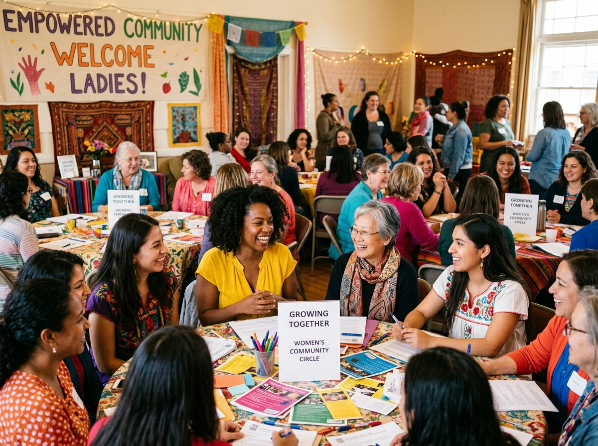
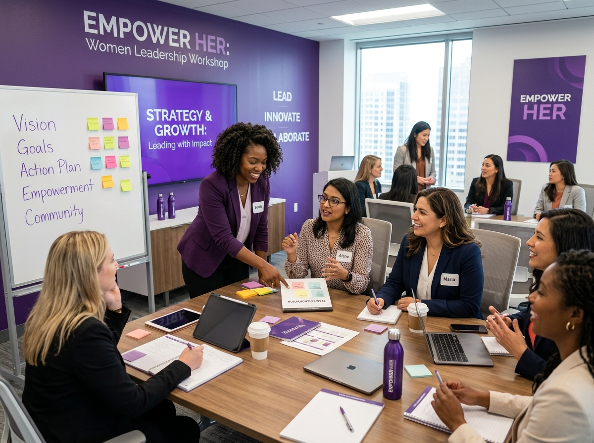
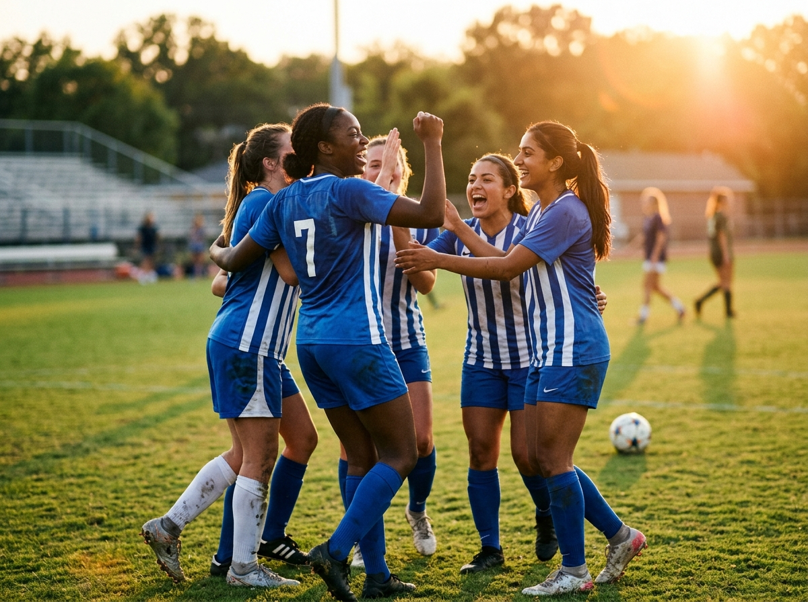
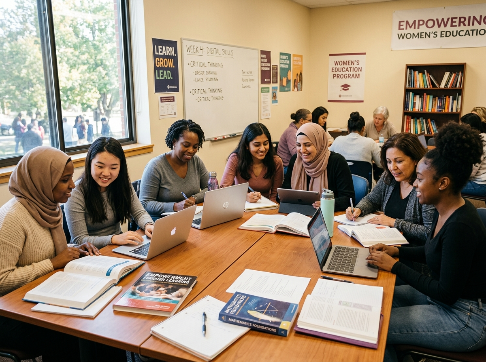

"Empowering Women. Inspiring Leadership. Transforming Lives."
WESF is a non-profit dedicated to uplifting women through education, sports, leadership development, and community programs — creating a world where every woman thrives.
Founded in 2015, the Women's Empowerment and Sports Foundation (WESF) is a non-profit organization committed to breaking barriers and building opportunities for women across all walks of life.
We believe that when a woman is empowered, entire families and communities are transformed. Through strategic programs in education, sports, healthcare, and livelihood, we reach women in underserved communities — giving them the tools, confidence, and networks they need to lead.
A world where every woman leads with confidence and dignity.
Empowering women through education, sports, and community leadership.
Inclusivity, integrity, compassion, and excellence in all we do.
Community-driven, data-informed, and partnership-powered programs.
WESF channels its energy into seven transformative pillars — each designed to create lasting change in the lives of women and their communities.
Building confidence, agency, and financial independence through targeted empowerment initiatives and support networks.
Providing scholarships, literacy programs, and access to quality education for women and girls in marginalized communities.
Cultivating the next generation of women leaders through mentorship, training, and exposure to leadership opportunities.
Promoting physical and mental health through wellness programs, awareness campaigns, and access to healthcare services.
Equipping women with vocational skills, entrepreneurship training, and microfinance access to achieve economic independence.
Engaging communities through grassroots initiatives, advocacy, and collaborative development projects that uplift all members.
Creating pathways for women in sports — from grassroots training to competitive leagues — fostering teamwork and resilience.
Our diverse portfolio of programs is designed to meet women where they are and take them where they want to be.
Intensive workshops that equip women with communication, negotiation, financial literacy, and professional skills to excel in their chosen fields.
Connecting emerging women leaders with experienced mentors across industries for year-long, one-on-one growth journeys and peer learning groups.
Community-wide campaigns addressing gender-based violence, health education, digital literacy, and women's rights — driving systemic change.
Grassroots sports development including football, basketball, athletics, and martial arts — building discipline, teamwork, and confidence.
Startup incubation, business training, and microfinance access for women entrepreneurs — turning ideas into thriving community businesses.
Our flagship annual gathering bringing together changemakers, policymakers, sponsors, and community members for inspiration, celebration, and action.
Real lives, real change. Hear from the women whose journeys have been transformed by WESF.
WESF's leadership workshop changed my life completely. I walked in as a shy housewife and walked out as a confident entrepreneur. Today I run a small business employing five women from my village.
The sports program gave me discipline and purpose. I went from playing in the streets to representing my region in athletics. WESF believed in me when no one else did.
Through WESF's mentorship circle, I found my voice as a community leader. I've since launched a women's cooperative that has supported over 200 families in my district.
The scholarship I received from WESF allowed me to complete my engineering degree. I'm now working with a renewable energy company and mentoring young girls.
Join us at our upcoming events — every gathering is an opportunity to connect, learn, and be inspired.
A glimpse into the vibrant, powerful moments that define our journey.




Every action matters. Here's how you can be part of the WESF family and help us drive change.
Give your time and skills to support our programs, events, and community outreach. Every hour counts.
Apply NowYour financial support directly funds scholarships, workshops, sports equipment, and healthcare for women in need.
Give NowOrganizations and businesses can partner through CSR programs, sponsorships, and collaborative initiatives.
Explore PartnershipJoin the WESF community and enjoy exclusive events, networking opportunities, and the chance to shape our programs.
Join TodayHave questions, ideas, or want to collaborate? We'd love to hear from you. Our team responds within 24–48 hours.
123 Empowerment Avenue, Community District
New City, NC 45678
Mon – Fri: 8:00 AM – 5:00 PM
Saturday: 9:00 AM – 1:00 PM